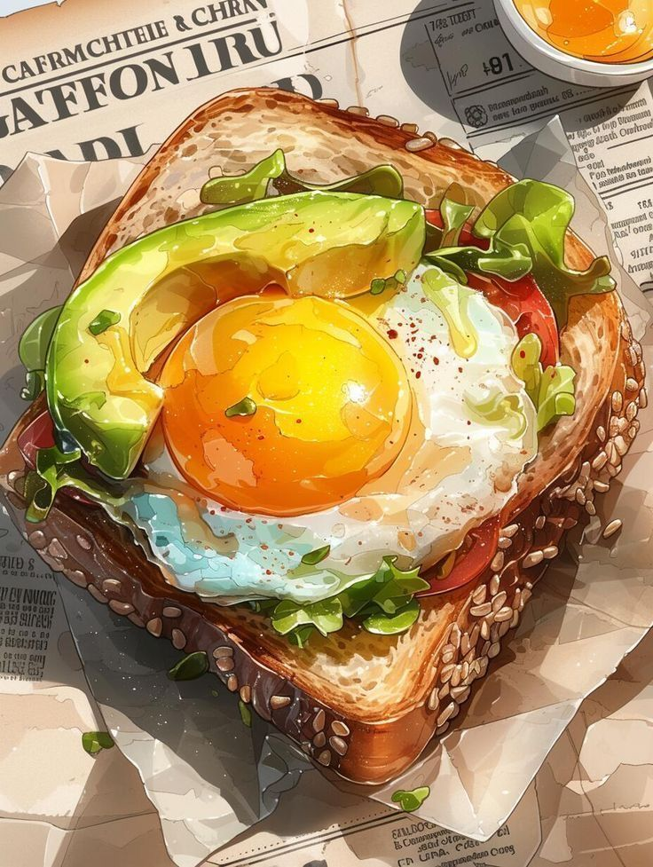
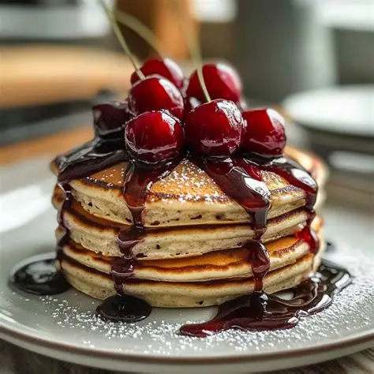
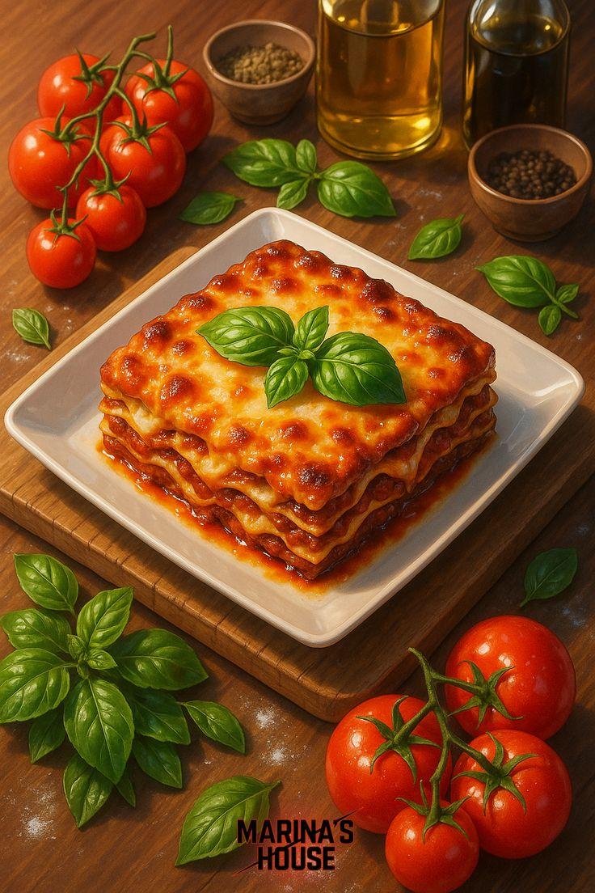
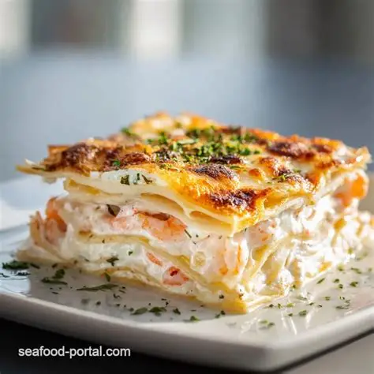
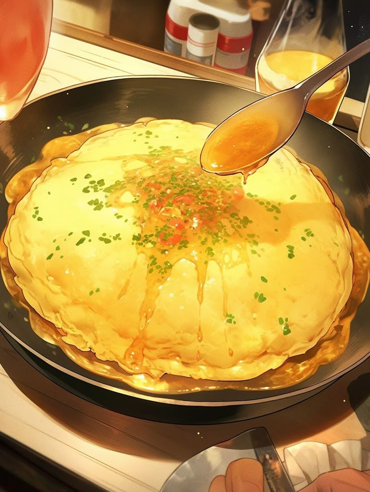
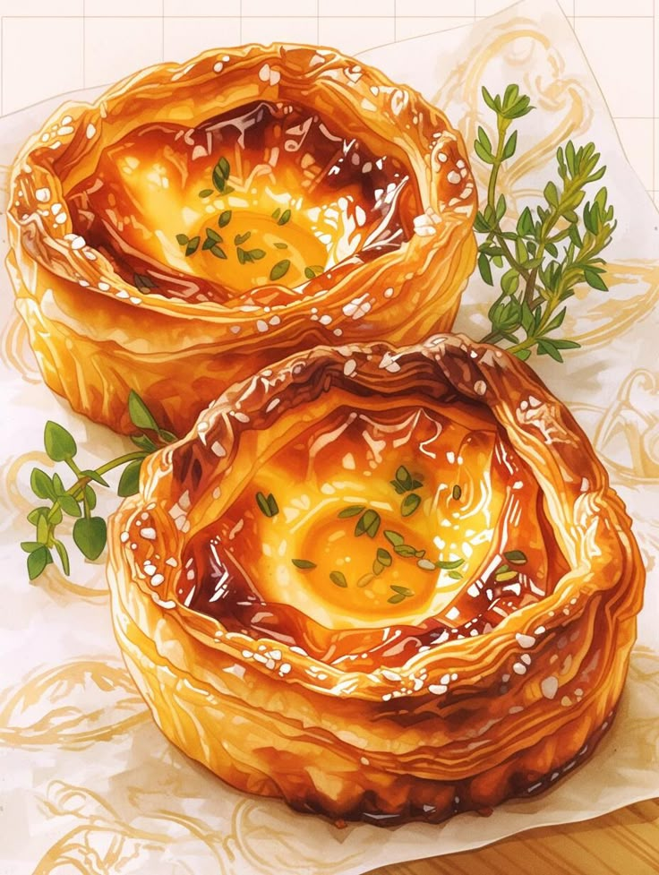
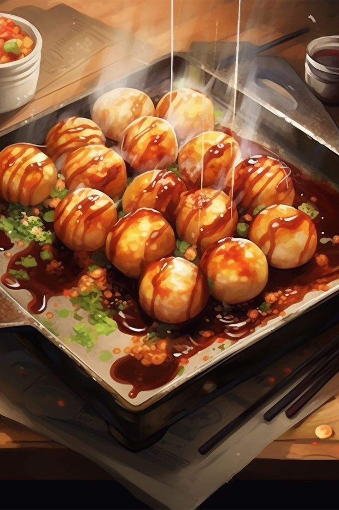

Toast the Bread: In a skillet, melt 1 tablespoon of butter over medium heat. Add the
bread slices and toast until golden brown on both sides.
Prepare the Honey: If the honey is thick, gently warm it in a small saucepan or microwave
for 10 seconds until it has a pourable consistency.
Assemble: Stack the warm toast slices on a plate.
Serve: Generously drizzle the warm honey over the top, letting it soak into the bread.
Sprinkle with a tiny pinch of sea salt if desired, and serve immediately.
Avocado & Egg Toast
⏱️ Prep 5 min | 🔥 Cook 5 min | 👥 Serves 1
⭐️⭐️⭐️⭐️⭐️

Ingredients
1 slice thick sourdough bread
1/2 ripe avocado, sliced
1 large egg
Red pepper flakes, salt, and pepper
Instructions
Toast the bread: Toast the bread until crisp.
Prepare the Egg: Fry the egg in a pan to your preferred doneness (sunny side up
recommended).
Prepare the Avocado: Mash or fan out the avocado on the toast, top with the fried egg.
Serve: Season with salt, pepper, and red pepper flakes.
Cherry Topped Pancakes
⏱️ Prep 10 min | 🔥 Cook 10 min | 👥 Serves 2
⭐️⭐️⭐️⭐️

Ingredients
For the Pancakes:
150g all-purpose flour
1 tbsp sugar
1 tsp baking powder
1/4 tsp salt
1 large egg
200ml whole milk
2 tbsp melted butter
For the Cherry Topping:
150g fresh or frozen cherries (pitted)
2 tbsp maple syrup or honey
1 tsp lemon juice
Instructions
Prepare the Topping: In a small saucepan, combine the cherries, syrup, and lemon juice.
Cook over medium heat for 5–7 minutes until the cherries soften and release their juices into a syrup
consistency. Set aside.
Mix Dry Ingredients: In a large mixing bowl, whisk together the flour, sugar, baking
powder, and salt.
Combine Wet Ingredients: In a separate bowl, whisk the egg, milk, and melted butter. Pour
this into the dry ingredients and stir until just combined (a few lumps are fine).
Cook Pancakes: Heat a non-stick skillet over medium heat with a little butter. Scoop 1/4
cup of batter per pancake onto the skillet. Cook until bubbles form on the surface, then flip and cook until
golden brown (about 2 minutes per side).
Assemble: Stack the warm pancakes on a plate. Pour the warm cherry mixture over the top,
allowing the syrup to drizzle down the sides. Serve immediately.
Crispy Korean Fried Chicken Rice Bowl
⏱️ Prep 20 min | 🔥 Cook 25 min | 👥 Serves 4
⭐️⭐️⭐️⭐️⭐️
Ingredients
For the Chicken:
600 g boneless chicken thighs, cut into bite-sized pieces
1 cup buttermilk
1 tsp salt
1/2 tsp black pepper
1 tsp garlic powder
1 tsp onion powder
For the Coating:
1 cup all-purpose flour
1/2 cup cornstarch
1 tsp paprika
1 tsp baking powder
1/2 tsp salt
Vegetable oil, for frying
For the Korean Sauce:
3 tbsp gochujang (Korean chili paste)
2 tbsp honey
2 tbsp soy sauce
1 tbsp brown sugar
2 cloves garlic, minced
1 tbsp rice vinegar
1 tsp sesame oil
For the Rice Bowl:
4 cups cooked jasmine rice
4 fried or soft-boiled eggs
1 tbsp sesame seeds
2 tbsp green onions, sliced
Lime wedges, for serving
Fresh cilantro, for garnish (optional)
Instructions
Marinate the Chicken: Combine the chicken, buttermilk, salt, black pepper, garlic powder,
and onion powder in a bowl. Marinate for 20–30 minutes.
Prepare the Coating: Mix the flour, cornstarch, paprika, baking powder, and salt in a
shallow bowl. Coat each piece of marinated chicken evenly.
Fry the Chicken: Heat vegetable oil to 175°C (350°F). Fry the chicken in batches for 6–8
minutes, until golden brown and crispy. Drain on a wire rack or paper towels.
Make the Korean Sauce: In a small saucepan, combine gochujang, honey, soy sauce, brown
sugar, garlic, rice vinegar, and sesame oil. Simmer for 2–3 minutes, stirring until smooth and slightly
thickened.
Coat the Chicken: Add the fried chicken to a large bowl and pour the warm Korean sauce
over it. Toss until every piece is evenly coated.
Assemble the Bowl: Divide the steamed rice among serving plates. Arrange the glazed
chicken around the rice. Top with a fried or soft-boiled egg.
Garnish & Serve: Sprinkle with sesame seeds and sliced green onions. Garnish with
fresh cilantro and serve with lime wedges. Enjoy immediately while the chicken is hot and crispy.
Biang Biang Noodles
⏱️ Prep 30 min | 🔥 Cook 20 min | 👥 Serves 4
⭐️⭐️⭐️⭐️⭐️
Ingredients
For the Noodles:
500 g all-purpose flour
250 ml warm water
1 tsp salt
1 tbsp vegetable oil
For the Toppings:
250 g beef, thinly sliced (optional)
2 heads bok choy
100 g bean sprouts
2 tbsp cilantro, chopped
2 cloves garlic, minced
2 stalks green onions, sliced
For the Chili Oil Sauce:
3 tbsp chili flakes
2 tbsp light soy sauce
1 tbsp Chinese black vinegar
1 tsp sugar
4 tbsp hot vegetable oil
to taste salt
Instructions
Prepare the Dough: Mix flour, salt, and warm water until a smooth dough forms. Knead for
8–10 minutes, coat lightly with oil, cover, and let rest for 30 minutes.
Cook the Beef: Season the beef lightly with salt and pepper. Sear in a hot pan for 2–3
minutes until cooked through. Set aside.
Prepare the Vegetables: Blanch the bok choy and bean sprouts in boiling water for 1–2
minutes. Remove and drain.
Stretch the Noodles: Divide the dough into equal portions. Roll each into a long strip
and
gently stretch into wide, belt-like noodles. Boil for 2–3 minutes until tender.
Assemble the Bowl: Place the cooked noodles into serving bowls. Top with garlic, chili
flakes, green onions, cilantro, cooked beef, bok choy, and bean sprouts.
Make the Chili Oil: Heat the vegetable oil until very hot. Carefully pour it over the
garlic and chili flakes to release their aroma.
Season & Serve: Add light soy sauce, dark soy sauce, black vinegar, and sugar. Toss
everything together until evenly coated. Serve immediately while hot.
Marina's House Lasagna
⏱️ Prep 45 min | 🔥 Cook 60 min | 👥 Serves 8
⭐️⭐️⭐️⭐️


Ingredients
Meat Sauce:
1 tbsp olive oil
1 lb sweet Italian sausage:
1 lb ground beef
1 cup onion, diced
1/2 cup carrot, diced
2 cloves garlic, minced
2 jars high-quality marinara sauce
Cheese Layer & Assembly:
2 packs fresh lasagna sheets
16 oz ricotta cheese
1 cup Parmigiano-Reggiano, grated
1 large egg, beaten
1 lb mozzarella, grated
Lasagna noodles, marinara sauce
Ground meat, ricotta, mozzarella
Fresh basil for garnish
Instructions
Make the Sauce: Sauté sausage, beef, onion, and carrot in olive oil until browned. Add
garlic for 1 minute. Pour in the marinara sauce, reduce heat, and simmer for 20–30 minutes. Season to taste.
Prepare the Cheese: In a bowl, stir together the ricotta, Parmigiano-Reggiano, and
beaten egg until smooth.
Layer: Preheat your oven to 375°F. In a 13 × 9-inch baking dish, spread 3/4 cup of sauce
on the bottom. Add layers of:
Fresh pasta sheets
Ricotta mixture
Meat sauce
Mozzarella
Repeat until the pan is full.
Bake & Rest:
Cover with foil and bake for 45–60 minutes. Remove foil for the last 5–10 minutes to brown the cheese. Let
rest for 15–20 minutes before slicing. Bake at 190°C (375°F) for 45-60 minutes until bubbling and golden.
Server: Rest for 10 minutes before serving with fresh basil.
Chicken Katsu with Rice
⏱️ Prep 15 min | 🔥 Cook 15 min | 👥 Serves 2
⭐️⭐️⭐️⭐️⭐️
Ingredients
For the Chicken Katsu:
2 large chicken breasts, halved horizontally to make 4 thin fillets
1/3 cup all-purpose flour
2 large eggs, beaten
1 (1/2) cups Panko breadcrumbs
Salt and black pepper to taste
Neutral frying oil (e.g., vegetable or canola)
For the Rice and Serving:
2 cups Japanese short-grain or sushi rice, rinsed until the water runs clear
Water (per rice package instructions)
Tonkatsu sauce (store-bought or whisk together 2 tbsp ketchup, 1 tbsp Worcestershire sauce, 1 tbsp soy
sauce, and 1 tsp sugar)
Instructions
Cook the Rice: Add the rinsed rice and water to a pot or rice cooker. Cook until fluffy.
Prepare the Chicken: Place the chicken fillets between sheets of parchment paper and
pound evenly to about (1/2)-inch thickness. Season generously with salt and pepper
Bread the Chicken: Set up three shallow bowls: one with flour, one with beaten egg, and
one with Panko. Dredge each chicken piece in the flour (shake off excess), dip in the egg, and then press
firmly into the Panko until fully coated.
Fry: Heat about (1/2)-inch of oil in a large skillet over medium-high heat. Fry the
chicken for 3 to 4 minutes per side until golden brown and the internal temperature reaches 74°C / 165°F.
Serve: Rest the cooked chicken on a wire rack for a minute, then slice into strips.
Divide the rice into bowls, top with the sliced chicken katsu, and drizzle heavily with Tonkatsu sauce
Tomato Basil Pasta
⏱️ Prep 5 min | 🔥 Cook 10 min | 👥 Serves 2
⭐️⭐️⭐️⭐️⭐️
Ingredients
200g fusilli pasta
2 large tomatoes, diced
2 tbsp olive oil
Handful of fresh basil, chopped
1 tablespoon fresh garlic, minced
1 tablespoon unsalted butter
¼ cup fresh mozzarella or grated Parmesan cheese (optional, for serving)
Salt and black pepper to taste
Instructions
Cook the Pasta: Bring a large pot of water to a rolling boil and add the salt. Cook the
pasta according to the package directions until just al dente. Reserve ½ cup of the starchy pasta water,
then drain the pasta and set it aside.
Sauté the Garlic: Heat the olive oil in a large skillet over a low flame. Add the minced
garlic and cook for 2 to 3 minutes until it becomes fragrant, ensuring it does not burn.
Blister the Tomatoes: Turn the heat up to medium and add the cherry tomatoes along with
two small pinches of salt. Sauté for a few minutes until they soften and start to blister. Gently press down
on the tomatoes with the back of a wooden spoon to break them open and let their juices out.
Build the Sauce: Pour in the reserved pasta water and let the mixture simmer on medium
heat for about 5 minutes until the liquid reduces into a light, glossy sauce.
Toss and Finish: Add the cooked pasta and the butter to the skillet, tossing everything
vigorously to coat the strands evenly. Stir in the fresh basil leaves and mix for another 30 seconds until
the basil just begins to wilt from the residual heat.
Garnish and Serve: Turn off the heat. Top with torn pieces of fresh mozzarella or a
dusting of Parmesan cheese. Serve immediately while piping hot.
1 cup shredded lettuce, 1 cup shredded cheddar cheese
1 large tomato (diced), sour cream, and salsa
Instructions
Brown the Beef: Heat oil in a large skillet over medium-high heat. Add ground beef,
breaking it apart with a spoon. Cook for 5–7 minutes until browned. Drain excess grease.
Season the Meat: Reduce heat to medium. Sprinkle all spices evenly over the beef. Toss
well to ensure the meat is fully coated.
Simmer and Sauce: Pour in the tomato sauce or water. Stir and simmer for 3–5 minutes
until the liquid reduces into a thick, glossy coat. Remove from heat.
Warm the Shells: Place hard taco shells on a baking sheet and heat at 180°C (350°F) for 3
minutes for maximum crispiness.
Assemble: Spoon beef into shells. Layer with lettuce, tomatoes, cheddar cheese, and top
with sour cream or salsa. Serve immediately!
Classic Omurice
⏱️ Prep 10 min | 🔥 Cook 10 min | 👥 Serves 1
⭐️⭐️⭐️⭐️⭐️

Ingredients
For Chicken Fried Rice:
2 cups day-old cooked short-grain white rice (warmed slightly)
100g boneless chicken thigh, cut into ½-inch bite-sized cubes
½ medium yellow onion, finely chopped
¼ cup frozen peas and carrots blend
1 tbsp vegetable oil
3 tbsp ketchup
1 tsp soy sauce
Salt and black pepper to taste
For Omelette (Per Serving):
4 large eggs (split into 2 eggs per serving)
2 tsp milk or heavy cream
2 tsp unsalted butter (split for two pans)
Extra ketchup for drizzling
Instructions
Step 1: Cook the Fried Rice
Sauté the Protein and Veggies: Heat vegetable oil in a large non-stick skillet over
medium heat. Add the chopped chicken pieces and cook until they turn white. Toss in the onions, peas, and
carrots, cooking for about 3 minutes until softened.
Season the Mix: Push the ingredients to the outer edge of your skillet. Squeeze the
ketchup and soy sauce directly onto the cleared center of the hot pan, letting it bubble for 10 seconds to
caramelise slightly before tossing it completely into the chicken and vegetables.
Incorporate the Rice: Add the cooked rice to the pan. Use your spatula to break up any
large clumps. Toss everything vigorously for 2 to 3 minutes until every grain of rice turns a uniform red
hue. Season lightly with salt and pepper.
Mould the Rice: Divide the finished rice evenly between two small bowls or
football-shaped moulds. Pack it tightly, invert it onto the middle of two serving plates, and lift the bowl
to leave a neat mound of rice.
Step 2: Create the Omelette Jacket
Whisk the Eggs: Crack 2 eggs into a small bowl with 1 teaspoon of milk and a pinch of
salt. Whisk intensely with chopsticks until the egg yolks and whites blend smoothly without stringy residue.
Cook the Egg: Melt 1 teaspoon of butter in a clean, small 8-inch non-stick skillet over
medium-low heat. Pour in the egg mixture. Stir quickly with your chopsticks while shaking the pan back and
forth to create small curds.
Wrap or Slide: When the egg is mostly set on the bottom but still slightly wet and
custard-like on top, remove from heat. Gently slide the open omelette sheet directly over one of your
prepared rice mounds, letting it drape neatly over the edges like a blanket.
Shape and Garnish: Place a clean piece of paper towel over the omelette and gently press
with your hands to sculpt it into a smooth, oval football shape. Drizzle a zig-zag decoration of fresh
ketchup across the top. Repeat for the second serving.
Garlic Butter Shrimp
⏱️ Prep 10 min | 🔥 Cook 15 min | 👥 Serves 4
⭐️⭐️⭐️⭐️⭐️
Ingredients
500 g large shrimp, peeled & deveined
3 tbsp unsalted butter
2 tbsp olive oil
4 cloves garlic, finely minced
1 lemon, juiced
½ cup dry white wine (optional)
Salt & freshly ground black pepper, to taste
½ tsp chili flakes
2 tbsp fresh parsley, chopped
Instructions
Prepare shrimp: Pat shrimp dry with paper towels and season lightly with salt and pepper.
Sauté aromatics: Heat butter and olive oil in a skillet over medium heat. Add garlic and
cook until fragrant, about 1 minute.
Cook shrimp: Add shrimp to the pan. Cook 2–3 minutes per side until pink and opaque.
Deglaze: Pour in white wine (if using) and let it reduce for 2 minutes.
Finish sauce: Stir in lemon juice, chili flakes, and parsley. Toss shrimp to coat and
serve
immediately.
Grilled Butter Corn on the Cob
⏱️ Prep 10 min | 🔥 Cook 20 min | 👥 Serves 4
⭐️⭐️⭐️⭐️
Ingredients
For the Corn:
4 ears fresh sweet corn, husks removed
2 tbsp olive oil
For the Garlic Butter:
4 tbsp unsalted butter, melted
2 cloves garlic, minced
1 tbsp fresh parsley, finely chopped
1 tsp smoked paprika
1/2 tsp chili powder (optional)
1/2 tsp sea salt
1/4 tsp freshly ground black pepper
Instructions
Prepare the Corn: Remove the husks and silk from the corn. Rinse well and pat dry.
Brush
each ear lightly with olive oil.
Make the Garlic Butter: In a small bowl, combine melted butter, minced garlic, parsley,
smoked paprika, chili powder, salt, and black pepper. Mix until well combined.
Grill the Corn: Preheat the grill to medium-high heat (200°C / 400°F). Grill the corn
for
15–20 minutes, turning every 3–4 minutes until lightly charred and evenly cooked.
Brush with Butter: During the last 5 minutes of grilling, generously brush the garlic
butter over each ear of corn, turning frequently to coat all sides.
Garnish: Remove the corn from the grill. Sprinkle with Parmesan cheese (if using) and
additional chopped parsley.
Serve: Serve immediately with lime wedges on the side. Brush with any remaining garlic
butter before serving for extra flavor.
Savory Pastry Cups
⏱️ Prep 15 min | 🔥 Cook 20 min | 👥 Serves 6
⭐️⭐️⭐️⭐️

Ingredients
1 sheet pre-rolled puff pastry (thawed but cold)
1 tbsp olive oil or butter
200g button mushrooms, finely chopped
2 cloves garlic, minced
¼ cup cream cheese or goat cheese (at room temperature)
½ cup shredded mozzarella or Gruyère cheese
1 tsp fresh thyme leaves
Salt and black pepper to taste
Instructions
Prep the Oven and Tin: Preheat your oven to 200°C (400°F). Lightly grease a 12-cup mini
muffin tin with cooking spray or a touch of oil.
Sauté the Filling: Heat the olive oil or butter in a pan over medium heat. Add the
chopped mushrooms and cook for 5 minutes until their moisture evaporates. Stir in the minced garlic and
thyme, cooking for 1 more minute until fragrant. Remove from heat, stir in the cream cheese until smooth,
and season with salt and pepper.
Cut the Pastry Sheets: Unroll your cold puff pastry sheet onto a lightly floured surface.
Use a knife or pizza cutter to slice the sheet into 12 equal squares.
Form the Pastry Cups: Gently press one pastry square into the bottom and up the sides of
each muffin tin slot, leaving the corners hanging slightly over the top edges. Prick the bottom of each
pastry cup a few times with a fork to prevent it from puffing up too much.
Fill and Top: Spoon a generous tablespoon of the mushroom mixture into each pastry cup.
Top each one with a heavy sprinkle of shredded mozzarella or Gruyère cheese.
Bake Until Golden: Bake for 12 to 15 minutes until the pastry edges turn a deep golden
brown and the cheese filling is bubbling hot. Let them cool in the tin for 2 minutes before transferring
them to a platter. Serve warm.
Boil the Eggs: Boil eggs for 6 minutes and 30 seconds for a jammy yolk, then transfer to
ice water to stop cooking. Peel, slice in half, and set aside.
Sauté the Aromatics: Heat sesame oil in a saucepan and cook garlic and ginger for 1
minute until fragrant.
Build the Fiery Broth: Stir in gochujang (or Sriracha) and chili oil. Add broth and soy
sauce, bringing to a simmer for 5 minutes.
Cook the Greens: During the last 2 minutes, add bok choy or spinach to the broth to wilt.
Cook the Noodles: Cook ramen noodles in a separate pot per package instructions (2–3
minutes) and drain well.
Assemble the Bowl: Divide noodles into bowls, ladle hot broth and greens over them, and
top with eggs, green onions, and sesame seeds.
2 bunches Tokyo negi or thick scallions (cut into 1-inch pieces)
1 tbsp vegetable oil (for brushing)
8 bamboo skewers (soaked for 30 minutes)
Instructions
Step 1: Simmer the Sauce (Tare)
Combine Ingredients: Stir soy sauce, mirin, sake, brown sugar, and the smashed green
onion in a small saucepan over medium-high heat.
Reduce and Thicken: Bring to a boil, then simmer for 8–10 minutes until reduced by half
into a glossy glaze. Divide into two bowls (one for cooking, one for dipping).
Step 2: Assemble the Skewers
Thread the Ingredients: Slide a cube of chicken followed by a piece of scallion onto a
soaked skewer.
Repeat and Pack: Alternate until you have 3–4 pieces of meat per skewer, ending with
chicken. Press tightly together.
Step 3: Grill to Perfection
Prep the Cooktop: Heat your grill or broiler to medium-high and grease grates with oil.
Initial Sear: Grill for 3–4 minutes to develop marks, then flip and cook for 3 minutes.
Glaze and Caramelize: Brush heavily with the cooking Tare, flip, and cook 1 more minute
until bubbling and caramelized. Coat once more and serve with clean dipping sauce.
180ml (approx. ¾ cup) lukewarm water or whole milk
1 tbsp vegetable oil (plus extra for brushing)
½ tsp fine salt
Instructions
Step 1: Make and Knead the Dough
Activate the Yeast: Dissolve sugar and instant yeast in warm water or milk; let sit for 5
minutes until foamy.
Mix the Dry Ingredients: Whisk flour, baking powder, and salt in a large bowl.
Form a Dough: Stir in the wet mixture and oil until a shaggy dough forms.
Knead Smooth: Knead by hand for 8-10 minutes (or 5 minutes by mixer) until smooth,
elastic, and non-sticky.
Step 2: Shape the Folded Buns
The First Proof: Place dough in an oiled bowl, cover, and let rise in a warm spot for 1
to 1.5 hours until doubled.
Divide and Roll: Punch down the dough, roll into a log, and slice into 10-12 pieces;
shape into balls.
Create the Tongue Shape: Flatten each ball into an oval about ¼-inch thick.
Brush and Fold: Brush the top with oil, place a small parchment square in the center, and
fold the oval in half like a taco.
Step 3: Steam to Perfection
The Second Proof: Place folded buns on parchment squares in a steamer basket; rest for
15-20 minutes until puffy.
Steam Gently: Steam over steady, medium heat.
The Cool Down: Steam for exactly 10 minutes, then turn off the heat and let rest closed
for 5 minutes to prevent wrinkling. Remove the lid, discard the inner parchment, and add fillings!
Takoyaki
⏱️ Prep 20 min | 🔥 Cook 15 min | 👥 Serves 4
⭐️⭐️⭐️⭐️⭐️

Ingredients
For Thin Batter:
100g all-purpose or cake flour
340ml cold dashi stock
1 large egg
1 tsp soy sauce
¼ tsp salt
For Fillings:
80g cooked octopus, cut into ½-inch cubes
2 green onions, finely chopped
1 tbsp beni shoga (pickled ginger), chopped
¼ cup tenkasu (tempura scraps)
For Classic Toppings:
Takoyaki sauce, Kewpie mayo, Aonori, and Katsuobushi
Instructions
Whisk the Batter: Whisk egg, dashi, and soy sauce. Slowly sift in flour and salt until
smooth, thin, and watery.
Preheat and Oil: Generously coat a takoyaki pan with oil over medium heat.
Pour the First Layer: Fill each mold completely with batter; overflow is expected.
Drop the Fillings: Place octopus in each hole and scatter green onions, ginger, and
tempura scraps over the griddle.
The 90-Degree Flip: Once base edges are firm (2–3 minutes), use a skewer to trace
gridlines and turn each ball 90 degrees.
Shape the Spheres: Sweep excess batter into the holes and rotate again to let liquid
batter cook, forming a sphere.
Crisp and Rotate: Roll balls for 4–5 minutes, swapping positions for even heat until deep
golden-brown.
Sauce and Serve: Serve hot, drizzled with takoyaki sauce, mayo, aonori, and bonito
flakes.
Classic Pepperoni Pizza
⏱️ Prep 20 min | 🔥 Cook 15 min | 👥 Serves 4
⭐️⭐️⭐️⭐️⭐️
Ingredients
For No-Knead Pizza Dough:
500g bread flour or Type 00 flour
1 tsp instant yeast
1 tsp fine salt
1 ½ cups lukewarm water
1 tbsp olive oil (plus extra for brushing)
For Pizza Toppings:
1 cup canned crushed San Marzano tomatoes (seasoned)
Mix the Dough: Whisk flour, yeast, and salt; stir in water and oil until a sticky dough
forms.
The First Rise: Cover tightly and let rest in a warm spot for 1–2 hours until doubled and
bubbly (or 24 hours in the fridge for flavor).
Crank up the Heat: Preheat oven to 260°C (500°F) for at least 45 minutes.
Step 2: Shape and Assemble
Divide and Stretch: Divide dough into two portions and gently stretch one into a 12-inch
circle on parchment paper.
Sauce and Cheese: Spread ½ cup sauce over the base, leaving a border, and scatter 1 cup
of mozzarella uniformly.
Load the Pepperoni: Arrange pepperoni slices in a single layer, placing them close
together.
Step 3: Bake Until Blistered
Slide it In: Use a flat sheet or peel to slide the parchment onto your hot oven steel,
stone, or baking sheet.
Bake to a Golden Crunch: Bake for 8–10 minutes at 260°C (500°F) until the crust is golden
and cheese is caramelized.
Garnish and Slice: Dust with Parmesan, drizzle with hot honey if desired, cool for 2
minutes, then slice.
Assorted Oden Cup
⏱️ Prep 10 min | 🔥 Cook 20 min | 👥 Serves 1
⭐️⭐️⭐️⭐️
Ingredients
Dashi broth (soy sauce, mirin, sake base)
Assorted fish cakes (chikuwa, satsuma-age)
Boiled eggs
Tofu cubes
Skewers for serving
Instructions
Simmer your dashi broth in a pot over low heat.
Add the fish cakes, tofu, and boiled eggs to the broth.
Let everything simmer gently until flavors are absorbed (about 15-20 minutes).
Serve in a deep cup or bowl, skewering the items as you add them for that classic street-food look.
Salted Caramel Cheesecake
⏱️ Prep 30 min | 🔥 Cook 55 min | ❄️ Chill 6 hrs | 👥 Serves 8
⭐️⭐️⭐️⭐️⭐️
Ingredients
For the Crust:
200 g digestive biscuits, crushed
100 g unsalted butter, melted
1 tbsp granulated sugar
1 tbsp vegetable oil
For the Cheesecake Filling:
500 g cream cheese, softened
150 g granulated sugar
2 large eggs
200 ml heavy cream
1 tsp vanilla extract
1 tbsp cornstarch
1 tbsp lemon juice
For the Salted Caramel Sauce:
200 g granulated sugar
60 g unsalted butter
120 ml heavy cream
1 tsp sea salt
1 tsp vanilla extract
For the Topping:
2 tbsp caramelized crushed nuts or toffee bits
Extra salted caramel sauce for drizzling
Instructions
Prepare the Crust: Preheat the oven to 160°C (320°F). Combine crushed biscuits, melted
butter, and sugar. Press firmly into the bottom of a springform pan and bake for 10 minutes. Let cool.
Make the Filling: Beat the cream cheese until smooth. Add sugar and mix well. Beat in the
eggs one at a time, then add heavy cream, vanilla extract, cornstarch, and lemon juice. Mix until silky
smooth.
Bake the Cheesecake: Pour the filling over the cooled crust. Bake for 50–55 minutes, or
until the edges are set and the center has a slight wobble.
Cool and Chill: Turn off the oven and leave the cheesecake inside with the door slightly
open for 1 hour. Refrigerate for at least 6 hours, preferably overnight.
Prepare the Salted Caramel: Heat the sugar in a saucepan over medium heat until melted
and
amber in color. Stir in the butter until fully combined. Slowly whisk in the heavy cream, then add the sea
salt and vanilla extract. Allow to cool slightly.
Decorate: Pour the salted caramel over the chilled cheesecake, letting it drip naturally
down the sides. Sprinkle caramelized nuts or toffee bits on top.
Serve: Slice with a warm knife for clean cuts. Drizzle each slice with extra salted
caramel
sauce and enjoy chilled.
Classic Chocolate Chip Cookies
⏱️ Prep 15 min | 🔥 Cook 12 min | 👥 Makes 18 cookies
⭐️⭐️⭐️⭐️⭐️
Ingredients
250g all-purpose flour
1/2 tsp baking soda
150g unsalted butter, softened
100g granulated sugar
100g brown sugar
1 tsp vanilla extract
1 large egg
200g semi-sweet chocolate chips
Instructions
Preheat: Preheat your oven to 180°C (350°F) and line a baking sheet with parchment paper.
Cream Butter & Sugar: In a large bowl, beat the softened butter with both sugars until
creamy. Beat in the egg and vanilla.
Combine Dry Ingredients: Stir in the flour and baking soda until just combined. Fold in
the chocolate chips.
Bake: Scoop rounded tablespoons of dough onto the baking sheet. Bake for 10–12 minutes
until the edges are lightly golden.
Cool: Let cookies cool on the baking sheet for 5 minutes before transferring to a wire
rack.